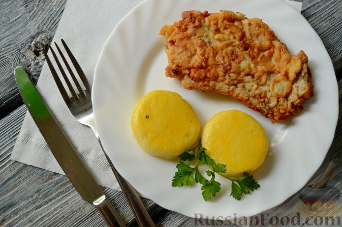

Гарнир «Герцогиня» из картофеля
Продукты
- Картофель - 1 кг
- Сыр твердых сортов - 50 г
- Яйца куриные (желтки) - 2 шт.
- Орех мускатный - на кончике ножа
- Соль - по вкусу
- Перец черный молотый - по вкусу
Инструкция
- Подготовьте все ингредиенты по рецепту картофельного гарнира. Сыр, в идеале, должен быть дорогих ароматных сортов, типа пармезана или овечьего, но и обычный российский будет хорош в этом блюде.
- Как приготовить гарнир из картофеля «Герцогиня»: Залейте очищенный картофель водой так, чтобы она слегка покрывала его. Посолите и отварите до готовности.
- Пока картофель варится, натрите на мелкой терке сыр.
- После того, как картофель отварился, слейте всю воду из кастрюли и измельчите картофель в пюре.
- Добавьте сыр и перемешайте. Туда же добавьте 1 яичный желток, мускатный орех, соль и черный перец. Размешайте еще раз до однородности.
- В кондитерский мешок или шприц с фигурной насадкой переложите теплую картофельную массу. Лучше сделать это сразу, так как остывший картофель очень тяжело выдавливается через отверстие шприца.
- Выдавите небольшие фигурные розочки на противень, застеленный пергаментом.
- Второй вид гарнира из картофельного пюре можно сделать в виде круглых медальонов.
- Аккуратно кулинарной кисточкой смажьте поверхность розочек вторым желтком.
- Смажьте желтком также поверхность картофельных медальонов.
- Запеките гарнир из картофеля с сыром в разогретой до 200 градусов духовке до зарумянивания, 15-20 минут.
- Праздничный картофельный гарнир «Герцогиня» готов. Подавайте гарнир из картофеля к основному блюду сразу же. Приятного аппетита!